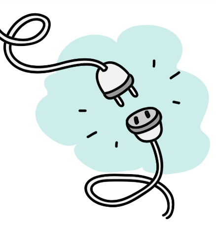
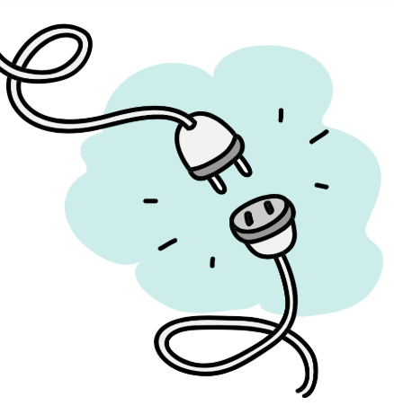

This Page is Missing Its Homework
Looks like this page resource took a wrong turn. But we've got a few of other helpful resources!
Would you like to:
Looks like this page resource took a wrong turn. But we've got a few of other helpful resources!
Would you like to: